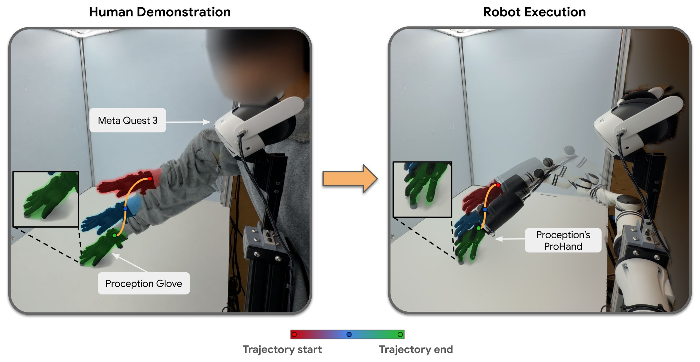
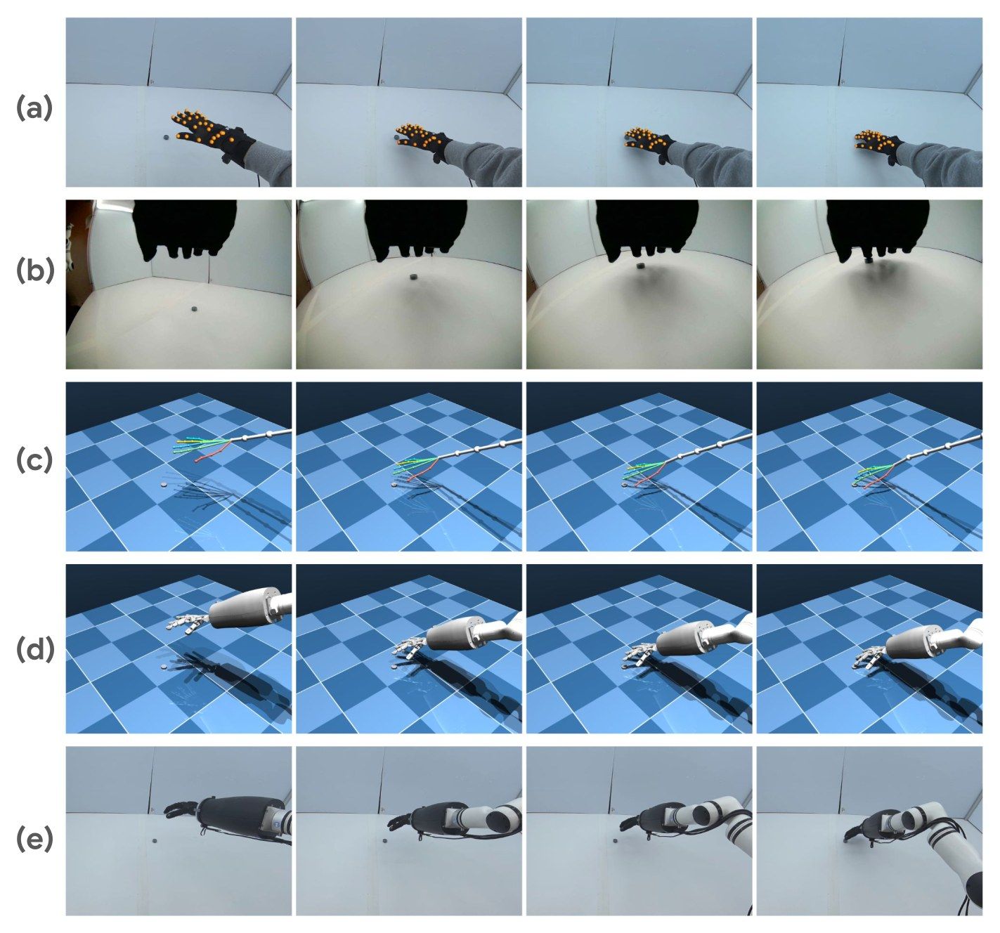
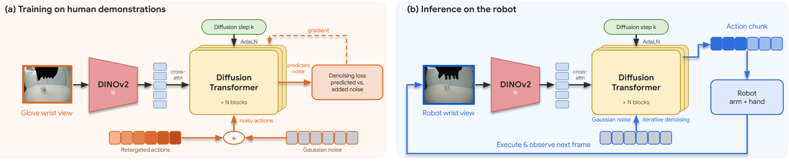

Policy Videos
Autonomous rollouts on the robot at 1× speed, with policies trained only on human demonstrations.
Abstract
For two-finger grippers, Universal Manipulation Interface (UMI) offers a practical framework for collecting human demonstrations and training robot policies. By co-designing the collection hardware and policy interface, it balances data-collection throughput with transferability to the robot. Extending this success to dexterous hands remains challenging despite advances in human demonstration collection. We introduce Pro-0, a dexterous manipulation model that we build by co-designing the hardware and learning algorithm. We build the system around Proception’s tendon-driven ProHand and wearable Proception Gloves, using matched wrist-camera viewpoints to align human and robot observations. This lean setup lets people demonstrate tasks naturally and provides data for learning RGB-only dexterous policies. Pro-0 transfers these policies directly to the robot without on-robot training data, achieving 80% success across multiple tasks.
Introduction
Imitation learning trades off data-collection throughput against transfer to the robot. Teleoperation records data on the target robot but is slow and needs robot hardware, while human videos are plentiful but hard to turn into executable robot actions. UMI showed that co-designing the collection device, its observations, and the policy interface lets portable human demonstrations transfer directly to a two-finger gripper. Pro-0 asks how to extend this to dexterous hands.
Existing dexterous systems each give something up: exoskeletons such as DexUMI constrain the operator to the robot’s kinematics, and glove-based systems such as DexCap, DexWild, and DexViTac rely on point clouds, robot co-training data, or extra sensing to transfer well. Pro-0 instead aligns the human and robot at collection time:
- A thin tactile glove fits both the human hand and the ProHand, so demonstrators move naturally.
- A glove-mounted wrist camera reproduces the robot’s wrist view, so no image editing is needed.
- Tracked hand motion is retargeted to the arm and hand with inverse kinematics, turning each demonstration into robot training data.
Method
A human demonstration recorded from the robot’s viewpoint and mapped into its joint space can be treated as a robot demonstration. Pro-0 turns each demonstration into wrist-camera images paired with executable robot actions, the same form as teleoperation data, in three steps.
1. Data capture
The capture system is built so that a human demonstration already looks like robot data:
- Matched viewpoint. A wrist camera on the glove sits where the robot’s wrist camera sits relative to its palm, so a policy trained on human data needs no image adaptation on the robot.
- Fixed tracking. A Meta Quest 3 on a stand, placed at a pose taken from the robot cell’s CAD model, tracks the demonstrator’s arm, wrist, and fingers in the robot’s workspace.
- Natural hands. The thin glove is the only thing worn on the hand, so demonstrators keep full dexterity and can feel contact.
- Shared touch. The glove’s tactile sensors use the same layout on the human hand and on the ProHand.
| Sensor | Modality | Rate | Description |
|---|---|---|---|
| Quest 3 | Hand keypoints | 60 Hz | Wrist and 5 × 4 finger joint poses |
| Quest 3 | Arm keypoints | 60 Hz | Shoulder-to-wrist chain |
| Quest 3 | Passthrough RGB | 60 Hz | Workspace view |
| Glove | Wrist RGB | 30 Hz | 1600 × 1200, global shutter |
| Glove | Tactile | ~230 Hz | 96 taxels on fingers and palm |
Modalities recorded per episode, for both hands, timestamped on a common clock.
2. Human-to-robot action transfer
Because the headset sits at a known pose in the robot cell, every tracked keypoint can be mapped directly from the headset frame into the robot base frame. Retargeting then solves, offline and for every timestep, the joints of a 7-DoF arm and a 22-DoF ProHand (2 wrist and 20 finger joints) that reproduce the human motion.
- Arm. Differential inverse kinematics drives the robot’s wrist to the human wrist pose. A posture term keeps the redundant elbow still unless tracking needs it, and each timestep is warm-started from the last for smooth trajectories.
- Hand. With the wrists aligned, keypoints at every finger joint and fingertip of the robot hand are matched to their human counterparts. Matching every joint, not just the fingertips, preserves the shape of each finger.
- Executable by construction. Joint limits and velocity bounds are enforced in the solver and the hand’s mechanical couplings after each step, so the resulting trajectory replays on the robot without further processing.

3. Policy learning
Each retargeted demonstration pairs wrist-camera images with robot joint trajectories, which we use to train a single multi-task diffusion policy.
- Image-only input. The policy sees only the current wrist image, with no image history or proprioception. Because the glove camera matches the robot camera, this input looks the same in training and deployment.
- Relative actions. Each action is the end-effector pose plus the 22 wrist and finger joints, expressed relative to the current state, so the policy describes how the hand should move rather than where it is.
- Architecture. A frozen DINOv2 encoder turns the image into a grid of patch tokens, kept as a sequence so the policy can attend to where objects and fingers appear. A diffusion transformer cross-attends to these tokens, with the diffusion step injected through adaptive layer norm.
- Deployment. The policy denoises an action chunk in 10 DDIM steps; the robot executes the first half through inverse kinematics, then replans from a new image.

Experiments
We test whether a policy trained only on human demonstrations can perform dexterous manipulation on a real robot, using three short tasks that cover reaching, pressing, grasping, and releasing.
- Buzzer: press a buzzer firmly enough to trigger it.
- Bucket: grasp a bucket and lift it off the table.
- Beanbag: starting with a beanbag in hand, release it into a bucket.
We collected 250 demonstrations per task (750 total), with object positions varied over a 40 cm × 40 cm area. Each task is evaluated over 20 trials: a trial scores 0.5 for reaching the target and 1.0 for completing the interaction.
Results
| Metric | Buzzer | Bucket | Beanbag | Average |
|---|---|---|---|---|
| Approach | 20 / 20 | 19 / 20 | 20 / 20 | 98.3% |
| Full success | 18 / 20 | 12 / 20 | 19 / 20 | 81.7% |
| Average score | 0.95 | 0.78 | 0.98 | 0.90 |
Real-robot results of a policy trained only on human demonstrations, 20 trials per task.
Almost all failures happen during the interaction rather than the approach, so the policy reliably reaches its target from the wrist view alone. Bucket is the hardest task: fingers wrapped around the handle are partly hidden from the headset, so tracked finger curl is underestimated and the retargeted grasps are less consistent. Better hand tracking during contact, or using the glove’s tactile signals as a policy input, are natural next steps.